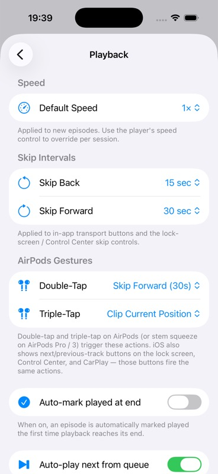

{kind=link}
{kind=link}
Persona, Job, And Acceptance Criteria
Persona: A new or returning podcast listener completing a core Pod0 job on iPhone. Acceptance criteria are the scenario Given/When/Then plus the declared architecture boundary D4.
Evidence refs: catalog:set-001
Pod0 Validation
Settings And Storage - incomplete
| Step | Phase | Action | Expected | Status | Evidence Needed |
|---|---|---|---|---|---|
| step-01-preconditions | Preconditions | Prepare playback settings are opened | Fixture, device, provider, account, cassette, and network state match the scenario setup. | not_run | source_doc, command_output |
| step-02-action | Primary Action | Execute skip intervals change | The user-visible route follows the intended path without hidden state mutation. | not_run | screenshot, ui_tree, log |
| step-03-result | Expected Result | Observe that player uses new values and settings persist | Observed UI, logs, metrics, and state projections agree with the expected behavior. | not_run | accessibility_audit, command_output, log, screenshot, source_doc, ui_tree |
| step-04-exit | Exit State | Leave the flow through the natural product path | Adjacent screens, back stack, mini-player, account, transcript, agent, or library state remain coherent. | not_run | screenshot, ui_tree |
Declared setup dependencies: settings seed. Provider mode is none until validation attaches fixtures or cassettes.
| Name | OS | Form Factor | UDID |
|---|---|---|---|
| iPhone 17 | iOS 26.2 | iphone | B4E1F31A-044B-4860-860B-C325BE5CC36E |
No cassettes declared for this scaffold.
Re-run after adding picker and relaunch coverage; do not promote I3 until every control class has current evidence.
| Attempt | Status | Executor | Tools | Commands | Notes |
|---|---|---|---|---|---|
| attempt-001 | incomplete | Codex via XcodeBuildMCP | mcp__xcode.tap, mcp__xcode.snapshot_ui, mcp__xcode.screenshot | build_run_sim extraArgs=-skipPackagePluginValidation launchArgs=--UITestSeed | Route and one toggle persistence path are evidenced; picker changes and relaunch persistence are not captured. |
SET-001 has current route/settings evidence, but skip interval change, player propagation, and relaunch persistence remain unvalidated.


Screenshots and UI-tree excerpts contain seeded settings labels only. No secrets are exposed.
Required evidence kinds: source_doc, screenshot, ui_tree, log, metric_trace, accessibility_audit
| Kind | Reason | Blocked Dimensions |
|---|---|---|
| picker-change-coverage | Default speed, skip interval, and gesture picker changes were not captured. | actual_result, ux_polish |
| relaunch-persistence | Persistence across app relaunch was not captured. | reliability_flakiness, offline_resume_behavior |
| accessibility_audit | VoiceOver, Dynamic Type, and contrast were not audited. | accessibility_dynamic_type, touch_ergonomics |
| ID | Type | Path | Description |
|---|---|---|---|
| catalog:set-001 | source_doc | sources/catalog/04-nostr-settings-platform-regression.md | Catalog source row for SET-001 at line 49. |
| rubric:review-skill-grounding | source_doc | data/skill-grounding.json | Required review skills and skill-search terms for scenario critique. |
| i3-screenshot-baseline | screenshot | assets/scenarios/i3-playback-settings/20260705T193900Z-player-settings-baseline.jpg | Playback settings baseline with speed, skip, gesture, and toggle controls. |
| i3-screenshot-auto-mark-off | screenshot | assets/scenarios/i3-playback-settings/20260705T193930Z-auto-mark-off.jpg | Auto-mark played at end toggled off. |
| i3-screenshot-persisted-after-navigation | screenshot | assets/scenarios/i3-playback-settings/20260705T194000Z-persisted-after-navigation.jpg | Playback settings after leaving and re-entering, with Auto-mark still off. |
| i3-ui-tree | ui_tree | assets/scenarios/i3-playback-settings/20260705T194000Z-ui-tree-excerpt.json | XcodeBuildMCP semantic UI-tree excerpts for Player settings and toggle persistence. |
| pod0-local-run-log | log | assets/scenarios/shared/20260705T193205Z-run-log-references.json | Shared build, runtime, simulator, and command log references for the local evidence run. |
| Area | Status | Summary | Checks | Gaps |
|---|---|---|---|---|
| accessibility | incomplete | Buttons and switches expose labels/values, but no VoiceOver/Dynamic Type/contrast audit was run. | semantic labels, switch values, Dynamic Type | Formal accessibility audit missing. |
| content_localization | incomplete | Podcast metadata, transcript/agent copy, truncation, empty copy, locale/date/number behavior, and translation safety. Current scaffold has no run evidence for SET-001. | copy clarity, long text, dates/numbers/locale, empty/error copy, transcript readability | Attach content localization evidence before scoring this area above 2. |
| controls_gestures | incomplete | Buttons, menus, sheets, gestures, audio route controls, haptics, keyboard alternatives, and touch reach. Current scaffold has no run evidence for SET-001. | touch reach, gesture alternative, audio controls, haptic expectation, sheet/menu behavior | Attach controls gestures evidence before scoring this area above 2. |
| observability | incomplete | Structured logs, metric IDs, provider/request IDs, relay IDs, redacted traces, and issue reproduction context. Current scaffold has no run evidence for SET-001. | metric IDs, request IDs, relay IDs, redacted traces, issue reproduction context | Attach observability evidence before scoring this area above 2. |
| offline_resume | incomplete | Offline state, app relaunch, background playback, interrupted provider calls, downloads, and resume from stale state. Current scaffold has no run evidence for SET-001. | offline messaging, resume after relaunch, background playback, download availability, cancel/retry | Attach offline resume evidence before scoring this area above 2. |
| performance | pass_with_issues | Local node-count metrics are captured for the settings screen. | screen responsiveness, snapshot node count | No Instruments trace. |
| privacy_security | incomplete | Secrets, private keys, permissions, logs, analytics, relay visibility, cassette redaction, and export safety. Current scaffold has no run evidence for SET-001. | no secrets in screenshots/logs, permission clarity, redaction hashes, private Nostr material safe | Attach privacy security evidence before scoring this area above 2. |
| reliability | incomplete | Rerun count, flake history, retry behavior, stale evidence, timeout behavior, and deterministic replay. Current scaffold has no run evidence for SET-001. | rerun count, retry cause, flake history, fresh build, deterministic replay | Attach reliability evidence before scoring this area above 2. |
| ui | pass_with_issues | Playback settings are visually organized and use native controls. | settings grouping, row hierarchy, toggle state | Picker changed states are not captured. |
| ux | incomplete | Toggle feedback and navigation persistence are clear; full settings workflow remains incomplete. | feedback, persistence, predictable navigation | Relaunch persistence and player propagation not captured. |
| Metric | Value | Budget | Status | Method |
|---|---|---|---|---|
| Player settings UI-tree node count | 220 nodes | Informational local metric | pass | XcodeBuildMCP snapshot_ui |
| Auto-mark toggle navigation persistence checks | 1 successful round trips | At least one navigation persistence check for this evidence pass | pass | Toggle to off, navigate back to Settings, re-enter Player, read switch value 0 |
Player settings snapshots each contain 220 nodes and were captured without visible loading delay.
Not assessed. Record transition, haptic, and Reduce Motion behavior when motion is part of the flow.
Not assessed. Review must check buttons, menus, sheets, gestures, audio route controls, haptics, keyboard alternatives, and one-handed reach.
| Dimension | Score | Status | Rationale |
|---|---|---|---|
| functional_correctness | 2 | incomplete | One toggle path passes, but every picker/relaunch criterion is not covered. |
| evidence_reproducibility | 3 | pass_with_issues | Screenshots, UI trees, and log references are attached for the captured path. |
| product_experience | 3 | pass_with_issues | The settings UI is coherent for captured controls. |
| engineering_quality | 2 | incomplete | No relaunch or player propagation validation is attached. |
| follow_through | 2 | incomplete | Follow-up coverage remains open. |
Ship gate: incomplete
| Gate | Status | Requirement | Owner |
|---|---|---|---|
| required_evidence | pass_with_issues | Screenshots/UI trees/logs/cassettes/metrics required by the scenario are attached and redacted. | validation-agent |
| skill_grounding | pass | UI, UX, accessibility, performance, and product judgments cite the loaded review skills or local doctrine. | validation-agent |
| score_integrity | pass_with_issues | Every dimension and group score follows the evidence gates and matches the final verdict. | validation-agent |
| product_coherence | incomplete | Individual scenario judgment and related-scenario group judgment are both present. | validation-agent |
| defect_tracking | incomplete | Every actionable defect has severity, owner, GitHub issue link, and fix/revalidation state. | validation-agent |
| release_readiness | incomplete | No blocker or major unresolved risk remains without an explicit owner and acceptance rationale. | validation-agent |
| Gap | Severity | Summary | Affected Dimensions | Owner |
|---|---|---|---|---|
| i3-picker-coverage-missing | major | Picker changes for speed, skip intervals, and gestures are not captured. | actual_result, ux_polish | validation-agent |
| i3-relaunch-persistence-missing | major | Settings persistence across app relaunch is not captured. | reliability_flakiness, offline_resume_behavior | validation-agent |
| Gap | Severity | Summary | Affected Dimensions | Owner |
|---|---|---|---|---|
| i3-picker-coverage-missing | major | Picker changes for speed, skip intervals, and gestures are not captured. | actual_result, ux_polish | validation-agent |
| i3-relaunch-persistence-missing | major | Settings persistence across app relaunch is not captured. | reliability_flakiness, offline_resume_behavior | validation-agent |
| ID | Severity | Priority | Risk | Dimensions | Mitigation |
|---|---|---|---|---|---|
| risk-i3-overread | major | p1 | I3 could be overread as validating all settings from one toggle path. | actual_result, verdict | Keep verdict incomplete until picker/relaunch/player propagation branches are captured. |
No defects are linked yet because this scaffold has not been executed.
| Dimension | Score | Status | Rationale |
|---|---|---|---|
| functional_correctness | 2 | incomplete | One toggle path passes, but every picker/relaunch criterion is not covered. |
| evidence_reproducibility | 3 | pass_with_issues | Screenshots, UI trees, and log references are attached for the captured path. |
| product_experience | 3 | pass_with_issues | The settings UI is coherent for captured controls. |
| engineering_quality | 2 | incomplete | No relaunch or player propagation validation is attached. |
| follow_through | 2 | incomplete | Follow-up coverage remains open. |
| Dimension | Score | Status | Rationale |
|---|---|---|---|
| persona_acceptance | 0 | incomplete | Persona, Job, And Acceptance Criteria has not been validated with current run evidence. |
| flow | 0 | incomplete | Flow has not been validated with current run evidence. |
| attempted_test | 3 | pass_with_issues | A current simulator run captures the route and one persistence path. |
| scenario_setup | 0 | incomplete | Scenario Setup has not been validated with current run evidence. |
| execution_attempts | 0 | incomplete | Execution Attempts, Retries, And Branches has not been validated with current run evidence. |
| expected_behavior | 0 | incomplete | Expected Behavior has not been validated with current run evidence. |
| actual_result | 2 | incomplete | Observed controls and one toggle persistence; picker/relaunch criteria remain missing. |
| artifacts | 3 | pass_with_issues | Screenshots, UI tree, and log references are attached. |
| evidence_provenance | 0 | incomplete | Evidence Provenance has not been validated with current run evidence. |
| review_skill_grounding | 0 | incomplete | Review Skill Grounding has not been validated with current run evidence. |
| ui_polish | 3 | pass_with_issues | The settings layout is clear and stable in captured states. |
| ux_polish | 2 | incomplete | Toggle UX is validated; picker and relaunch UX are not. |
| performance | 3 | pass_with_issues | Node counts were collected for the settings screen; no Instruments trace is attached. |
| accessibility_dynamic_type | 0 | incomplete | Accessibility And Dynamic Type has not been validated with current run evidence. |
| liquid_glass_ios_primitives | 0 | incomplete | Liquid Glass And iOS Primitives has not been validated with current run evidence. |
| error_recovery | 0 | incomplete | Error And Recovery Behavior has not been validated with current run evidence. |
| privacy_security | 0 | incomplete | Privacy And Security has not been validated with current run evidence. |
| nmp_architecture | 0 | incomplete | NMP Architecture And Cohesiveness has not been validated with current run evidence. |
| product_coherence | 0 | incomplete | Product Coherence In Context has not been validated with current run evidence. |
| product_cluster_coherence | 0 | incomplete | Product Cluster Coherence has not been validated with current run evidence. |
| before_after_deltas | 0 | incomplete | Before/After Deltas has not been validated with current run evidence. |
| reliability_flakiness | 0 | incomplete | Reliability And Flakiness has not been validated with current run evidence. |
| regression_risk | 0 | incomplete | Regression Risk has not been validated with current run evidence. |
| defects_issues_filed | 0 | incomplete | Defects And Issues Filed has not been validated with current run evidence. |
| revalidation_status | 0 | incomplete | Revalidation Status has not been validated with current run evidence. |
| risks_follow_up | 0 | incomplete | Risks, Follow-Up, And Back-Links has not been validated with current run evidence. |
| instrumentation_gaps | 0 | incomplete | Instrumentation Gaps And Missing Evidence has not been validated with current run evidence. |
| localization_content_quality | 0 | incomplete | Localization And Content Quality has not been validated with current run evidence. |
| controls_gestures_audio | 0 | incomplete | Controls, Gestures, Audio, And Haptics has not been validated with current run evidence. |
| offline_resume_behavior | 0 | incomplete | Offline, Interruption, And Resume Behavior has not been validated with current run evidence. |
| readiness_gates | 0 | incomplete | Readiness Gates has not been validated with current run evidence. |
| verdict | 2 | incomplete | The verdict is constrained by missing picker and relaunch coverage. |
| next_actions | 0 | incomplete | Next Actions has not been validated with current run evidence. |
| owner_status | 0 | incomplete | Owner And Status has not been validated with current run evidence. |
| data_integrity_state_sync | 0 | incomplete | Data Integrity And State Sync has not been validated with current run evidence. |
| navigation_state_restoration | 0 | incomplete | Navigation State And Restoration has not been validated with current run evidence. |
| device_viewport_coverage | 0 | incomplete | Device, Viewport, And Generated-Page Coverage has not been validated with current run evidence. |
| media_session_background_continuity | 0 | incomplete | Media Session And Background Audio Continuity has not been validated with current run evidence. |
| cross_screen_continuity | 0 | incomplete | Cross-Screen Continuity has not been validated with current run evidence. |
| states_resilience | 0 | incomplete | Empty, Loading, Offline, And Recovery States has not been validated with current run evidence. |
| touch_ergonomics | 0 | incomplete | Touch Ergonomics has not been validated with current run evidence. |
| motion_haptics | 0 | incomplete | Motion And Haptics has not been validated with current run evidence. |
| information_architecture | 0 | incomplete | Information Architecture has not been validated with current run evidence. |
| content_hierarchy | 0 | incomplete | Content Hierarchy has not been validated with current run evidence. |
| observability | 0 | incomplete | Observability has not been validated with current run evidence. |
| analytics_privacy_boundaries | 0 | incomplete | Analytics And Privacy Boundaries has not been validated with current run evidence. |
| replayability_cassette_provenance | 0 | incomplete | Replayability And Cassette Provenance has not been validated with current run evidence. |
| evidence_confidence | 3 | pass_with_issues | Evidence is current and local, but incomplete for all branches. |
| device_os_matrix | 0 | incomplete | Device And OS Matrix has not been validated with current run evidence. |
| sister_app_nmp_chirp_comparison | 0 | incomplete | Sister App, NMP, And Chirp Comparison has not been validated with current run evidence. |
Persona: A new or returning podcast listener completing a core Pod0 job on iPhone. Acceptance criteria are the scenario Given/When/Then plus the declared architecture boundary D4.
Evidence refs: catalog:set-001
Catalog flow for Settings And Storage: Given playback settings are opened, when skip intervals change, then player uses new values and settings persist.
Evidence refs: catalog:set-001
Executed SET-001 locally through Settings -> Player. Captured baseline controls, Auto-mark toggle off, and persistence after navigation away/back.
Evidence refs: i3-screenshot-baseline, i3-screenshot-auto-mark-off, i3-screenshot-persisted-after-navigation, i3-ui-tree, pod0-local-run-log
Declared setup dependencies: settings seed. Provider mode is none until validation attaches fixtures or cassettes.
Evidence refs: catalog:set-001
No attempts, retries, or branch executions have run. The page reserves structured attempt records for manual, simulator, CI, and replay executions.
Evidence refs: catalog:set-001
Expected behavior from BDD: player uses new values and settings persist. NMP/RMP boundary declared by the catalog: D4.
Evidence refs: catalog:set-001
Player settings exposes Default Speed, Skip Back, Skip Forward, Double-Tap, Triple-Tap, Auto-mark, Auto-play-next, and footer copy. Auto-mark persisted off after leaving and re-entering Player.
Evidence refs: i3-ui-tree, i3-screenshot-persisted-after-navigation
Attached three current screenshots, a semantic UI-tree excerpt, and shared log references.
Evidence refs: i3-screenshot-baseline, i3-screenshot-auto-mark-off, i3-screenshot-persisted-after-navigation, i3-ui-tree, pod0-local-run-log
6 non-catalog artifact(s) are attached with their published IDs, paths, redaction metadata, and run context.
Evidence refs: i3-screenshot-auto-mark-off, i3-screenshot-baseline, i3-screenshot-persisted-after-navigation, i3-ui-tree, pod0-local-run-log, rubric:review-skill-grounding
Review must be grounded in loaded skills, not generic taste. Selected grounding covers Liquid Glass/iOS primitives, generated-site accessibility and interaction guidelines, and Playwright-based page verification.
Evidence refs: rubric:review-skill-grounding
Settings rows are grouped clearly with explanatory copy and stable switch labels.
Evidence refs: i3-screenshot-baseline
The toggle interaction gives immediate feedback and persists across navigation; picker and relaunch workflows remain untested.
Evidence refs: i3-ui-tree
Player settings snapshots each contain 220 nodes and were captured without visible loading delay.
Evidence refs: i3-ui-tree
Not assessed. Requires VoiceOver/UI tree labels, Dynamic Type, contrast, Reduce Motion/Transparency, and touch target evidence.
Evidence refs: rubric:review-skill-grounding
Not assessed. Requires evidence that iOS primitives and glass-like materials are used as functional chrome, with accessibility fallbacks.
Evidence refs: rubric:review-skill-grounding
Not assessed. Error, offline, retry, cancellation, and recovery paths must be captured where the scenario can fail.
Evidence refs: catalog:set-001
Not assessed. Validation must scan screenshots, logs, cassettes, relays, and exports for leaked keys, tokens, private audio, or private Nostr material.
Evidence refs: catalog:set-001
Not assessed. Declared NMP/RMP boundary: D4. Review must check Rust-owned state/policy, thin native renderers, bounded FFI, replay clocks, and privacy fail-closed behavior.
Evidence refs: catalog:set-001, rubric:review-skill-grounding
SET-001 has partial current run evidence, but required branches remain unvalidated.
Evidence refs: i3-screenshot-auto-mark-off, i3-screenshot-baseline, i3-screenshot-persisted-after-navigation, i3-ui-tree, pod0-local-run-log, rubric:review-skill-grounding
Settings And Storage cluster coherence remains incomplete until adjacent scenarios are judged together; SET-001 now contributes current evidence and linked defects to that group view.
Evidence refs: i3-screenshot-auto-mark-off, i3-screenshot-baseline, i3-screenshot-persisted-after-navigation, i3-ui-tree, pod0-local-run-log, rubric:review-skill-grounding
Current evidence must be read as before/action/after deltas across the flow steps; any missing pair remains listed in instrumentation gaps.
Evidence refs: i3-screenshot-auto-mark-off, i3-screenshot-baseline, i3-screenshot-persisted-after-navigation, i3-ui-tree, pod0-local-run-log, rubric:review-skill-grounding
Not assessed. Validation must record rerun count, retry causes, flake history, stale-build risk, timeout behavior, and deterministic replay coverage.
Evidence refs: catalog:set-001
Not assessed. Validation must list adjacent scenarios and modules to rerun after any fix.
Evidence refs: catalog:set-001
No defects have been observed yet because the scenario has not run. Any actionable defect found later must link a GitHub issue before the page can leave incomplete.
Evidence refs: catalog:set-001
0 fixed issue(s) and 0 open issue(s) are linked; fixed issues require revalidation run IDs before closure is considered proven.
Evidence refs: i3-screenshot-auto-mark-off, i3-screenshot-baseline, i3-screenshot-persisted-after-navigation, i3-ui-tree, pod0-local-run-log, rubric:review-skill-grounding
Current risks are scaffolded from missing evidence and cluster regression exposure. Actionable defects must gain issue/PR links and revalidation run IDs.
Evidence refs: catalog:set-001
Screenshots, UI trees, logs, metrics, cassettes, and accessibility audits are listed as explicit missing evidence so gaps cannot be hidden in prose.
Evidence refs: catalog:set-001, rubric:review-skill-grounding
Not assessed. Review must check locale-sensitive strings, podcast metadata, transcript/agent content, truncation, empty/error copy, and translation safety.
Evidence refs: rubric:review-skill-grounding
Not assessed. Review must check buttons, menus, sheets, gestures, audio route controls, haptics, keyboard alternatives, and one-handed reach.
Evidence refs: rubric:review-skill-grounding
Not assessed. Offline, interruption, relaunch, background playback, cancellation, retry, and resume behavior must be captured where applicable.
Evidence refs: catalog:set-001
Ship gate is incomplete; gates now reflect attached evidence, remaining missing evidence, linked defects, and cluster-level follow-up.
Evidence refs: i3-screenshot-auto-mark-off, i3-screenshot-baseline, i3-screenshot-persisted-after-navigation, i3-ui-tree, pod0-local-run-log, rubric:review-skill-grounding
Evidence-backed incomplete: settings route and one persistence path are captured, but SET-001 skip-change and player-propagation acceptance coverage is missing.
Evidence refs: i3-ui-tree
Run the scenario, attach evidence, score every dimension, file defects, and republish this page from validated JSON.
Evidence refs: catalog:set-001
Readiness gates, instrumentation gaps, risks, issues, and next actions carry owner/status fields for follow-through.
Evidence refs: i3-screenshot-auto-mark-off, i3-screenshot-baseline, i3-screenshot-persisted-after-navigation, i3-ui-tree, pod0-local-run-log, rubric:review-skill-grounding
Not assessed. Verify persisted state, Rust projections, Swift render state, queue/download/transcript/index data, and exported/imported records agree before and after the user-visible action.
Evidence refs: catalog:set-001
Not assessed. Capture tab, sheet, detail path, back stack, deep-link, and relaunch restoration state so navigation success cannot hide stale or contradictory product state.
Evidence refs: catalog:set-001, rubric:review-skill-grounding
Not assessed. Record iPhone size class, Dynamic Type, orientation when relevant, and generated GitHub Pages desktop/mobile viewport checks for the published report page.
Evidence refs: rubric:review-skill-grounding
Not assessed. For podcast-facing flows, verify audio session route, mini-player/full-player continuity, queue state, lock-screen/background behavior, interruptions, and remote commands or mark them N/A with rationale.
Evidence refs: catalog:set-001
Not assessed. Capture before/after navigation state for adjacent surfaces and ensure mini-player, queue, transcript, agent, and settings remain coherent.
Evidence refs: catalog:set-001
Not assessed. Capture empty, loading, denied, unavailable, offline, retry, and recovery states reached by this scenario.
Evidence refs: catalog:set-001
Not assessed. Audit primary controls for reachability, 44x44 pt targets, spacing, and gesture alternatives.
Evidence refs: rubric:review-skill-grounding
Not assessed. Record transition, haptic, and Reduce Motion behavior when motion is part of the flow.
Evidence refs: rubric:review-skill-grounding
Not assessed. Confirm the user knows location, current mode, and next action from titles, tabs, bars, breadcrumbs, and hierarchy.
Evidence refs: rubric:review-skill-grounding
Not assessed. Verify podcast/show/episode/transcript/agent content outranks chrome and does not truncate critical meaning.
Evidence refs: rubric:review-skill-grounding
Not assessed. Attach structured logs, metric IDs, provider/request IDs, relay IDs, and redacted traces needed to diagnose failures.
Evidence refs: catalog:set-001
Not assessed. Confirm useful event boundaries without PII, private keys, raw transcripts/audio, or provider secrets.
Evidence refs: catalog:set-001
Not assessed. Declared dependencies: settings seed. Provider, relay, STT, TTS, LLM, and network behavior must use replay cassettes or explain live-only evidence.
Evidence refs: catalog:set-001
Evidence confidence is zero until a current build, device/OS, rerun count, freshness, and flake notes are attached.
Evidence refs: catalog:set-001
No device/OS matrix has run. The first validation should record simulator/device, OS, locale, appearance, Dynamic Type, and network state.
Evidence refs: catalog:set-001
Not assessed. Review must compare applicable NMP doctrine and known Chirp/sister-app fixes before marking this flow cohesive.
Evidence refs: rubric:review-skill-grounding